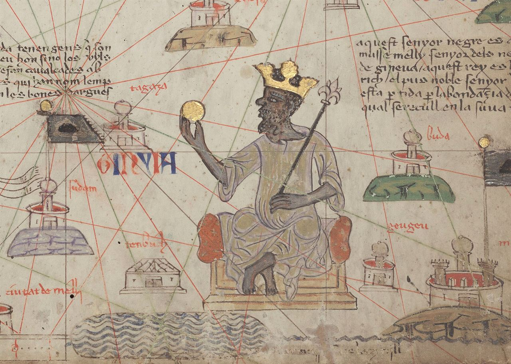
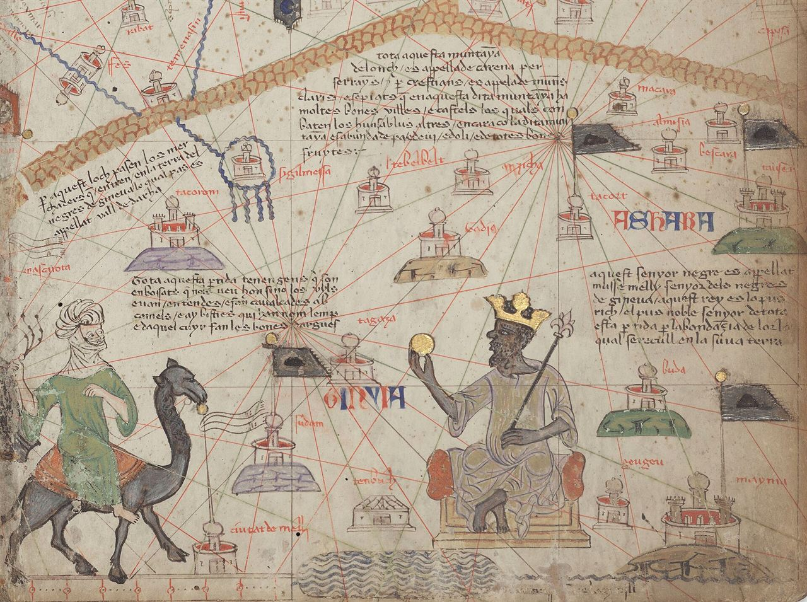
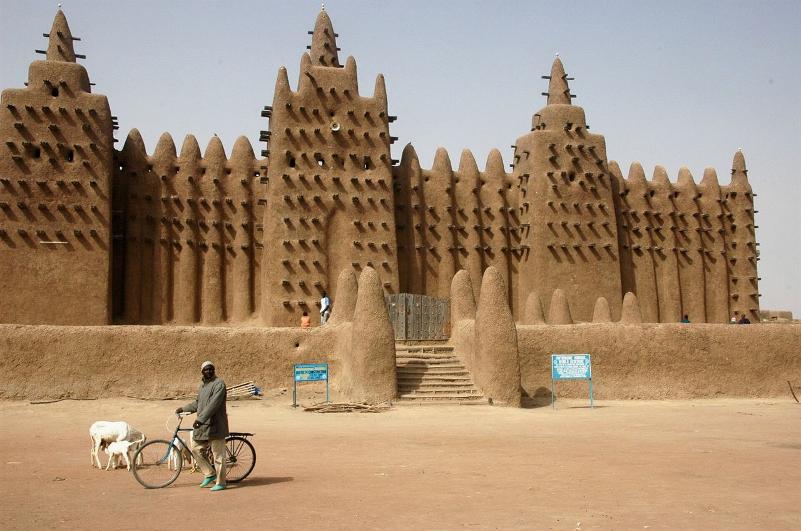

In 1324 Mansa Musa of Mali crossed the Sahara on pilgrimage to Mecca — and spent so much gold in Cairo that its price fell for a generation. This is the empire behind the legend: the richest state of the medieval world, and the library city it left behind.
Ask who was the wealthiest person who ever lived and you may hear a name from Mali: Mansa Musa. Behind the modern superlative lies a real empire that controlled the world's gold supply, built cities of mud and scholarship, and appears on a famous map of 1375 as a king on a throne, holding a golden nugget. This is how it worked — and why it matters.
The Mali Empire grew from the Mandé heartland south of the Sahara, founded — by oral tradition — by Sundiata Keita after his victory over the Sosso king at the Battle of Kirina (c. 1235). Out of that victory came the Kouroukan Fouga, a founding charter of law and custom that the griots still recite. The epic of Sundiata remains one of the great oral epics of the world.
Mali succeeded the older Ghana Empire as the dominant power of the western Sudan. Its emperor — the mansa — ruled an empire of provinces, tributaries and trading towns, from the capital at Niani on the Niger. The state's power rested on agriculture, the horse-borne cavalry of the nobility, and above all on control of the two commodities that made the Sahara a highway: gold and salt.
Gold came from the fields of Bambuk and Bure in the south; salt came from the mines of the desert, above all Taghaza, where blocks of salt were cut and borne south on camels. Traded against each other across the dunes, gold and salt drew Mali into a network that stretched to the Mediterranean and beyond.

In 1324, at the height of his reign (c. 1312–1337), Mansa Musa set out on the hajj, the pilgrimage to Mecca. He travelled in extraordinary state: a caravan said to number tens of thousands of people and animals, with camels carrying hundreds of pounds of gold. Accounts of the exact size vary, but the effect is not in doubt. Stopping in Cairo on the way, Musa and his court spent and gave away gold so freely that they depressed its value in the markets of Egypt.
The Mamluk official al-Umari, writing a decade later, gathered testimony from Cairenes who remembered it: the flood of Mali gold had lowered its price, and — in his account — the market had still not fully recovered years later. It is one of the few moments in history when a single ruler's generosity moved the price of gold across an entire economy.
“This man flooded Cairo with his benefactions… the value of gold fell and has not recovered.” — paraphrashed from al-Umari's account, c. 1337
On his return Musa did not simply bring back prestige. He brought back scholars, jurists and architects, among them the Andalusi poet-architect Abu Ishaq al-Sahili. Mali's cities would be reshaped with the mud-brick architecture of the Sahel — the ancestor of the great mosques of Timbuktu, Gao and Djenné that still stand.
Timbuktu began as a camp where desert caravans met the Niger. Under Mali — and later Songhai — it became something rarer: a city of learning. The Sankore mosque and madrasa anchored a community of scholars who copied, wrote and taught in astronomy, mathematics, medicine, law and history. Thousands of students came to study.
Books were treasure. Manuscripts were copied by hand, decorated, and traded like gold — at times, it was said, for more than any other merchandise. Hundreds of thousands of these manuscripts survive today, many hidden in family libraries during periods of invasion and later carried to safety, a fragile archive of a literate African past.

Mali's wealth was not a hoard but a system. Gold from the south and salt from the desert moved north and south on the same camel routes, taxed and channelled by the empire. Salt, essential for life and for preserving food, could be traded at times for its weight in gold — a measure of how much the desert's mines mattered.
The mansa governed through provincial governors and local rulers, extracting tribute and customs while allowing conquered peoples to keep their leaders and customs. Cowrie shells and gold dust served as money, and the state's reach extended from the Atlantic coast of Senegambia to the Niger bend. Ibn Battuta, who visited in 1352–53, described a well-ordered Muslim court — and was himself struck by the people's commitment to justice and their honouring of scholars.
The result was one of the wealthiest and most sophisticated states of its age — a fact that struck European map-makers so forcefully that they put its king, in gold, at the centre of Africa on the Catalan Atlas.
No empire lasts forever. In the 15th century Mali's provinces and vassals pulled away: the Tuareg took Timbuktu in 1433, and the rising Songhai Empire absorbed the great trading cities, taking Timbuktu in 1468 and Gao soon after. Mali shrank toward its Mandé heartland.
Songhai fell in turn at the Battle of Tondibi (1591) to a Moroccan army with firearms — but the deeper disruption was the collapse of the trans-Saharan trade system that had nourished the region. The cities declined; the manuscripts were hidden; the memory lived on in the griots' epics.
The legacy, though, outlasted every conquest. The Epic of Sundiata is still performed; the manuscripts of Timbuktu are again being studied; the mud mosques of Djenné and Timbuktu draw pilgrims and scholars. And the world has rediscovered Mansa Musa — a name now synonymous with a simple truth: that the deepest, most sophisticated wealth of the medieval world was African.
Mali controlled the medieval world's gold, made Timbuktu a city of books, and produced a king whose hajj was so rich it moved the price of gold in Cairo — a state whose memory the griots never let die.
The older western-Sudan power controls the gold–salt trade; Mali is a rising Mandé kingdom within it.
Victory at the Battle of Kirina; the Kouroukan Fouga charter is proclaimed.
Sundiata's successors extend Mali's reach across the western Sudan.
Musa I inherits an empire at its height — and soon makes it famous.
Musa's pilgrimage floods Cairo with gold; its value falls for years.
Gao and Timbuktu are secured; scholarship and mud-brick architecture flourish.
The great traveller records a well-ordered Muslim court under Mansa Sulayman.
European map-makers place Musa, holding gold, at the heart of Africa.
The Tuareg take the city, then Songhai absorbs Mali's great trading towns.
Songhai falls to Morocco; the trans-Saharan order declines — and Mali is long reduced.
Figures for caravan size, gold wealth and “richest man” totals are estimates and later reconstructions, and are presented as such. The empire's trade, scholarship and the 1324 hajj are documented in medieval sources.